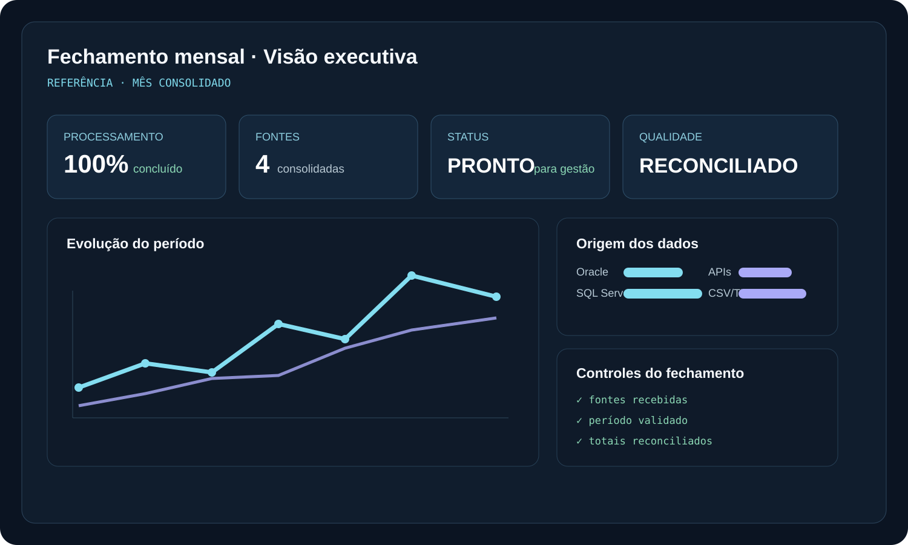

Quando o material original comprova uma implementação, eu descrevo como parte do caso. Quando discuto melhorias, alternativas ou mecanismos não documentados, marco explicitamente como análise técnica, trade-off ou evolução proposta.

- Deixar claro onde a decisão acontece
- Separar processamento, controle e publicação
- Tratar falhas sem confundir tipos de erro
- Facilitar operação, auditoria e evolução

Fontes chegavam em ritmos e formatos diferentes, enquanto a gestão precisava de uma visão única logo no primeiro dia útil.
Consultas, regras temporais, granularidade e modelagem transformam fontes heterogêneas em uma camada analítica preparada para Power BI.
01 / ESCOPO DOCUMENTADO
O desafio de fechar com fontes que chegam em ritmos diferentes
O caso reúne dados de Oracle, SQL Server, APIs e arquivos CSV/TXT, com necessidade de preparar indicadores para apresentação no primeiro dia útil do mês seguinte. Consultas e transformações SQL consolidavam os dados e a camada analítica os organizava para consumo no Power BI.
O material não publica tabelas internas, métricas ou ganhos de tempo. O aprofundamento abaixo descreve decisões técnicas coerentes com esse problema, sem atribuí-las automaticamente ao projeto original.
02 / INGESTÃO
Tratar cada fonte conforme sua natureza
Bancos relacionais permitem extração incremental por data, chave ou watermark; APIs exigem tratamento de paginação, limites e erros; arquivos precisam de validação de nome, período, layout e duplicidade. Eu padronizaria metadados de execução para que todas as origens pudessem ser reconciliadas no mesmo ciclo de fechamento.
Trade-off: uma camada genérica de ingestão reduz repetição, mas pode ficar complexa demais para fontes muito diferentes. Pipelines específicos são mais claros, porém aumentam manutenção.
03 / GRANULARIDADE
Definir o que uma linha representa antes do dashboard
A camada analítica precisa ter fatos com granularidade explícita e dimensões conformadas. Antes de criar medidas, eu definiria qual entidade e período cada fato representa e impediria joins que multiplicassem valores. Regras temporais precisam usar a mesma referência de fechamento.
Trade-off: um modelo dimensional adiciona trabalho de modelagem, mas simplifica consumo e reduz ambiguidade. Consultar tabelas operacionais diretamente é rápido no início, porém tende a gerar medidas frágeis e lógica duplicada.
04 / FECHAMENTO
Congelar um período exige uma definição de pronto
Eu usaria uma tabela de controle por fonte e período: esperado, recebido, processado, validado e liberado. O refresh final do Power BI deveria ocorrer somente quando as dependências críticas estivessem prontas ou quando uma exceção fosse formalmente aceita.
Trade-off: barreira de publicação aumenta confiabilidade, mas pode atrasar o dashboard por uma fonte secundária. Uma alternativa é publicar com sinalização explícita de parcialidade, desde que o negócio aceite.
05 / QUALIDADE E RECONCILIAÇÃO
O número precisa ser defensável
Antes da publicação, eu compararia contagens, totais financeiros e chaves críticas entre origem e camada analítica. Diferenças precisam gerar evidência rastreável, não apenas uma observação manual. As regras de transformação deveriam ser versionadas e documentadas.
Trade-off: reconciliações detalhadas aumentam o tempo de fechamento, mas reduzem o risco de apresentar números inconsistentes. O nível de controle deve acompanhar a criticidade do indicador.
06 / POWER BI
Deixar cálculo pesado onde ele faz mais sentido
Eu priorizaria transformar e consolidar no SQL quando a lógica for de preparação de dados, deixando DAX para medidas analíticas e contexto de filtro. Modelos em estrela, medidas explícitas e uma camada semântica bem nomeada melhoram manutenção e compreensão pelos usuários.
Trade-off: empurrar tudo para o banco melhora previsibilidade e desempenho, mas reduz flexibilidade do time de BI. Fazer tudo em DAX pode acelerar protótipos, mas aumenta complexidade do modelo.
07 / OPERAÇÃO
Um fechamento bom precisa ser repetível
Eu automatizaria a sequência de extração, validação, transformação, reconciliação e refresh, registrando duração e status por etapa. No primeiro dia útil, a equipe deveria conseguir responder rapidamente qual fonte está atrasada e qual impacto isso causa no fechamento.
Essa observabilidade é uma recomendação de implementação. O caso original documenta o prazo e as fontes, não a ferramenta específica de orquestração.